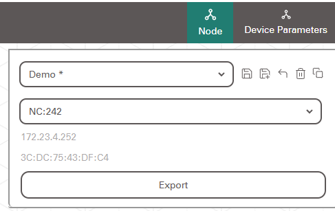
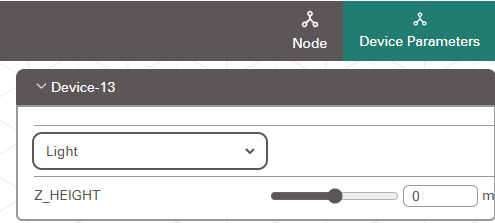
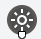
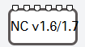
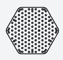

Node Configuration¶
The Node Configuration Editor allows you to setup which actuators are connected to a Node Controller, and how they are arranged spatially.

In the Node Configuration Editor you can drag and drop components from the left side menu to create an arrangement of actuators, and connect those actuators to a Node Controller to assign them to the connected actuator port.
Node Menu¶

General Settings such as the current preset, and currently selected Node Controller can be found in the Node Menu. This menu also lists the IP Address and MAC address of the currently selected Node Controller. The Export Button will export the current configuration to the Node Controller.
Device Parameters Menu¶

The Device Parameters Menu allows you to change the properties of the currently Selected Device. Here you can select the Devices Type (Light, Vibration or Motor) as well as set the devices Z_HEIGHT, which is the height of the device above floor level in millimeters.
Blocks¶
3 types of blocks can be dragged and dropped into the configuration workspace:

Devices:¶Devices can be positioned in space and connected to the Node Controller Block to define which Actuator Pin they are connected too. Devices can be one of 3 types Light, Vibration or Motor. The device type can be set in the Device Parameters Menu.

Node Controller:¶The Node Controller block has 6 Actuator pins which devices can be connected to. The Node Controller also defines the origin of the layout space, all device positions are relative to the Node Controller block.
Warning
Only one Node Controller block should be added to the workspace, adding more than 1 Node Controller block to the workspace can cause export errors.

Pegboard Guides:¶The Pegboard guides provide a reference image of the LASG Kit Pegboards to use as a scale reference when laying out devices. Both the Hex Pegboard and Tri Pegboard are provided, and the type can be toggled by selecting a Pegboard guide and using the dropdown in the Device Parameters Menu.